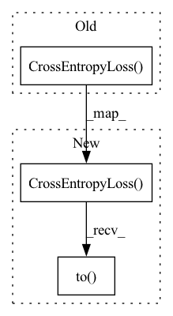

Pattern ID :4856

Before Change
self.optimizer = optim.SGD(
self.model.parameters(), lr=0.1, momentum=0.9, weight_decay=5e-4
)
self.criterion = nn.CrossEntropyLoss()
def reset_local_params(self):
self.total = 0
self.correct = 0
After Change
self.optimizer = optim.SGD(
self.model.parameters(), lr=0.1, momentum=0.9, weight_decay=5e-4
)
self.criterion = nn.CrossEntropyLoss().to(device)
def reset_local_params(self):
self.total = 0
self.correct = 0
In pattern: SUPERPATTERN
Frequency: 5
Non-data size: 3
Instances
Fragment ID: 17065748
Project Name: fedml-ai/fedml
Commit Name: 0e8053368ce27cbcf26a0ad90c902629fba2aa4c
Time: 2022-08-25
Author: chaoyanghe.com@gmail.com
File Name: python/fedml/simulation/mpi/split_nn/server.py
M Class Name: SplitNN_server
N Class Name: SplitNN_server
M Method Name: init_params(1)
N Method Name: init_params(1)
M Parent Class:
N Parent Class:
M File Name: python/fedml/simulation/mpi/split_nn/server.py
N File Name: python/fedml/simulation/mpi/split_nn/server.py
M Start Line: 22
M End Line: 22
N Start Line: 22
N End Line: 22
'>
Before Change
self.model = model
self.model.to(self.device)
self.criterion = nn.CrossEntropyLoss()
if self.args.client_optimizer == "sgd":
self.optimizer = torch.optim.SGD(self.model.parameters(), lr=self.args.lr)
else:
self.optimizer = torch.optim.Adam(
After Change
self.model = model
self.model.to(self.device)
self.criterion = nn.CrossEntropyLoss().to(device)
if self.args.client_optimizer == "sgd":
self.optimizer = torch.optim.SGD(self.model.parameters(), lr=self.args.lr)
else:
self.optimizer = torch.optim.Adam(
'>
Fragment ID: 17065746
Project Name: fedml-ai/fedml
Commit Name: 0e8053368ce27cbcf26a0ad90c902629fba2aa4c
Time: 2022-08-25
Author: chaoyanghe.com@gmail.com
File Name: python/fedml/centralized/centralized_trainer.py
M Class Name: CentralizedTrainer
N Class Name: CentralizedTrainer
M Method Name: __init__(5)
N Method Name: __init__(5)
M Parent Class: object
N Parent Class: object
M File Name: python/fedml/centralized/centralized_trainer.py
N File Name: python/fedml/centralized/centralized_trainer.py
M Start Line: 37
M End Line: 37
N Start Line: 37
N End Line: 37
'>
Before Change
self.args = args
self.device = device
self.criterion = nn.CrossEntropyLoss()
self.isdrop = False
self.model_trainer = model_trainer
After Change
self.args = args
self.device = device
self.criterion = nn.CrossEntropyLoss().to(device)
self.isdrop = False
self.model_trainer = model_trainer
'>
Fragment ID: 17065747
Project Name: fedml-ai/fedml
Commit Name: 0e8053368ce27cbcf26a0ad90c902629fba2aa4c
Time: 2022-08-25
Author: chaoyanghe.com@gmail.com
File Name: python/fedml/simulation/sp/turboaggregate/TA_client.py
M Class Name: TA_Client
N Class Name: TA_Client
M Method Name: __init__(8)
N Method Name: __init__(8)
M Parent Class: Client
N Parent Class: Client
M File Name: python/fedml/simulation/sp/turboaggregate/TA_client.py
N File Name: python/fedml/simulation/sp/turboaggregate/TA_client.py
M Start Line: 24
M End Line: 24
N Start Line: 24
N End Line: 24
'>
Before Change
self.model = model
self.model.to(self.device)
self.criterion = nn.CrossEntropyLoss()
if self.args.client_optimizer == "sgd":
self.optimizer = torch.optim.SGD(self.model.parameters(), lr=self.args.lr)
else:
self.optimizer = torch.optim.Adam(
After Change
self.model = model
self.model.to(self.device)
self.criterion = nn.CrossEntropyLoss().to(device)
if self.args.client_optimizer == "sgd":
self.optimizer = torch.optim.SGD(self.model.parameters(), lr=self.args.lr)
else:
self.optimizer = torch.optim.Adam(
'>
Fragment ID: 17065742
Project Name: fedml-ai/fedml
Commit Name: 5ed43926cab918500be4a542e7ee005fe93b84e7
Time: 2022-08-25
Author: chaoyanghe.com@gmail.com
File Name: python/fedml/centralized/centralized_trainer.py
M Class Name: CentralizedTrainer
N Class Name: CentralizedTrainer
M Method Name: __init__(5)
N Method Name: __init__(5)
M Parent Class: object
N Parent Class: object
M File Name: python/fedml/centralized/centralized_trainer.py
N File Name: python/fedml/centralized/centralized_trainer.py
M Start Line: 37
M End Line: 37
N Start Line: 37
N End Line: 37
'>
Before Change
if loss_type=="label_smoothing":
criterion = LabelSmoothingLoss(conf["model"]["out_dim"], padding_idx=conf["model"]["pad_id"])
elif loss_type=="cross_entropy":
criterion = nn.CrossEntropyLoss(ignore_index=conf["model"]["pad_id"])
return criterion.to(device)
After Change
if loss_type=="label_smoothing":
criterion = LabelSmoothingLoss(conf["model"]["out_dim"], padding_idx=conf["model"]["pad_id"]).to(device)
elif loss_type=="cross_entropy":
criterion = nn.CrossEntropyLoss(ignore_index=conf["model"]["pad_id"]).to(device)
elif loss_type=="rnnt_loss":
import warp_rnnt._C as core
criterion = rnnt_loss
'>
Fragment ID: 17065743
Project Name: qute012/kosr
Commit Name: 40fb17f5a01ef3b746e7c8822b5a016b3c8f88dc
Time: 2021-02-01
Author: ejrwls012@gmail.com
File Name: kosr/utils/loss.py
M Class Name: AnonimousClass
N Class Name: AnonimousClass
M Method Name: build_criterion(1)
N Method Name: build_criterion(1)
M Parent Class:
N Parent Class:
M File Name: kosr/utils/loss.py
N File Name: kosr/utils/loss.py
M Start Line: 48
M End Line: 55
N Start Line: 48
N End Line: 58